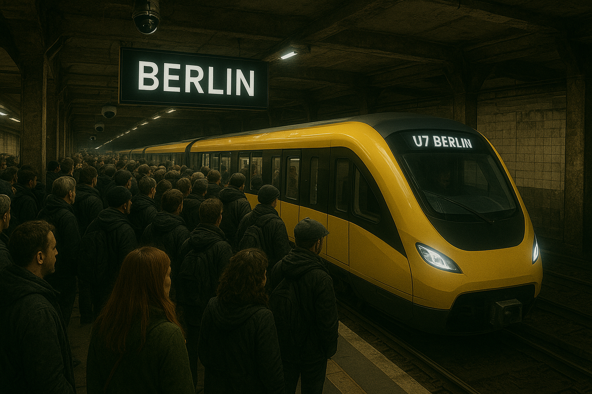

Ärger im Berufsverkehr! BVG plant neue Fahrklassen: Proteste wachsen
28.11.2035
In Berlin regt sich deutlicher Widerstand gegen die geplante Anpassung von Fahrklassen und Fahrplänen im Einklang mit dem ESSS (European Social Score System). Durch die vorgesehene Aufteilung der Waggons in Bereiche für Bürger mit hohem und niedrigem Score soll das Fahren in der BVG angeblich sicherer, geordneter und angenehmer werden. Doch für viele Menschen erinnert genau dieser Ansatz an historische Formen der Trennung und sie fürchten eine moderne, digital legitimierte Zwei-Klassen-Gesellschaft.
• Zwei Fahrklassen geplant
• Anpassung durch ESSS definiert
• Berlin reagiert gereizt
• Proteste in mehreren Bezirken angekündigt
Die BVG verweist darauf, dass sich die Maßnahme als „notwendig“ erweise, um Sicherheit, Pünktlichkeit und Ordnung im Verkehr aufrechtzuerhalten. Die Anpassung sei, so die Begründung, nicht politisch motiviert, sondern Folge europäischer Regularien, die Mobilitätsangebote stärker an das ESSS koppeln. Besonders Stoßzeiten sollen so entlastet werden: Premium-Zeitfenster sollen künftig ausschließlich Bürgerinnen und Bürgern mit höherer Bewertung zur Verfügung stehen.
Der Berliner Senat verteidigt die Maßnahme. Aus der Infrastrukturverwaltung heißt es: „Die Unterschiede im ÖPNV-Zugang basieren ausschließlich auf dem ESSS und damit auf Faktoren, die jede Person aktiv beeinflussen kann. Wer seine Bewertung verbessert, erhält Zugang zu erweiterten Zeitfenstern und Bereichen. Das System belohnt Engagement, es benachteiligt niemanden.“ Eine konkrete Antwort auf die Kritik, dass auch der Wohnort in die Bewertung einfließt, bleibt das Amt allerdings schuldig.
In mehreren europäischen Metropolen zeigt sich bereits, wohin diese Entwicklung führen kann. In Paris waren im Herbst mehrere äußere Bezirke, darunter Saint-Denis, Clichy-sous-Bois und Noisy-le-Sec Kommentar von Justus2015: Selber Schuld wer dort wohnt. zeitweise nicht mehr angebunden. Offiziell wegen „Sicherheitsüberlastungen“, inoffiziell wegen sinkender regionaler Bewertungen. Auch im Londoner East End kam es zu temporären Sperrungen bestimmter Linien. Genau diese Angst greift nun in Berlin um sich: In Berlin regt sich deutlicher Widerstand Besonders die Bezirke Neukölln, Wedding und Marzahn warnen vor einer möglichen Abkopplung.
„Das ist wie ein digitaler Rosa-Parks-Moment“, sagt die Bürgerinitiative ÖPNV für Alle. Sie hat für Samstag eine Demonstration am Hermannplatz angekündigt.
Soziale Initiativen wie „ÖPNV für Alle“ warnen, dass die Kopplung von Infrastruktur an Bewertungen unweigerlich dazu führe, dass ganze Stadtteile stigmatisiert werden. Auch internationale Forschungsgruppen sehen im ESSS die Gefahr einer stillen, datengetriebenen Stadtumgestaltung, ohne demokratische Aushandlung.
„Wenn die U-Bahn mich bald nicht mehr mitnimmt, weil mein Wohngebiet schlecht eingeordnet wird, was soll ich machen?“, sagt Leyla M. (27, Wedding).
„Ich arbeite Schichten und kann mir nicht aussuchen, wann ich fahre. Und jetzt soll ich in den ‚Basiszone‘, während andere vorbeiwinken? Das ist einfach ungerecht“, meint Rüdiger P. (53, Lichtenberg).
Die Gewerkschaft Ver.di warnt: „Die Zwei-Klassen-Bahn wird zu einer Zwei-Klassen-Stadt.“
Das ESSS kombiniert zahlreiche Variablen: Zahlungsverhalten, Bildungsaktivitäten, Community-Engagement, digitale Interaktionen, Verkehrshistorie und Wohnlage. Kritiker mahnen , dass dieses System strukturelle Benachteiligungen verstärke, etwa für Menschen mit eingeschränktem Zugang zu Bildung, stabilen Wohnverhältnissen oder digitaler Infrastruktur. Die Europäische Kommission betont hingegen „transparente und faire Kriterien“,
• Seit 2033 EU-weit + UK
• Kombination mehrerer sozialer und digitaler Faktoren
• Kritik: algorithmische Verzerrung, soziale Segregation
• Befürworter: höhere Sicherheit und Effizienz im Verkehr